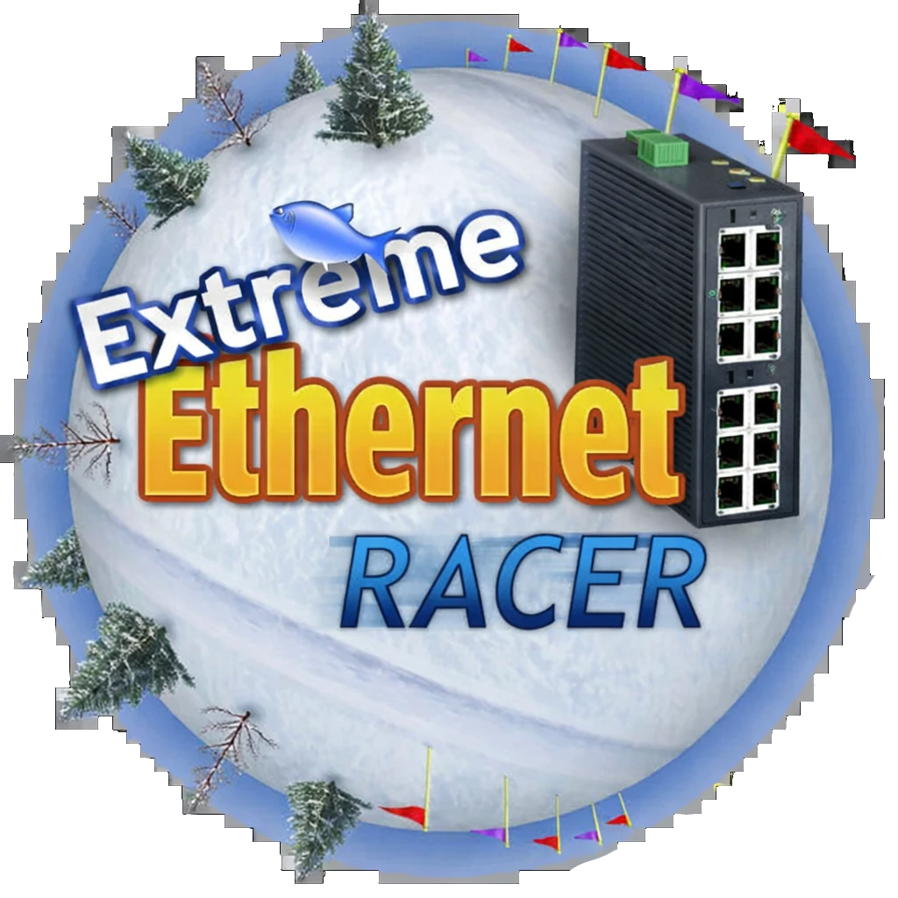

Choose a Weidmueller switch and launch the game.
Choose your switch
Start the hosted game on the tux-at-home course with one of two industrial Ethernet switches. Both entries use the same transform and load their STEP geometry directly from Weidmueller infrastructure.
IE-SW-EL05-5TX
Launch the game with the Weidmueller EcoLine unmanaged switch, article number 2682130000.
Play With IE-SW-EL05-5TXIE-SW-AL18M-16TX-2GC
Launch the game with the Weidmueller AdvancedLine managed switch, article number 2682330000.
Play With IE-SW-AL18M-16TX-2GC